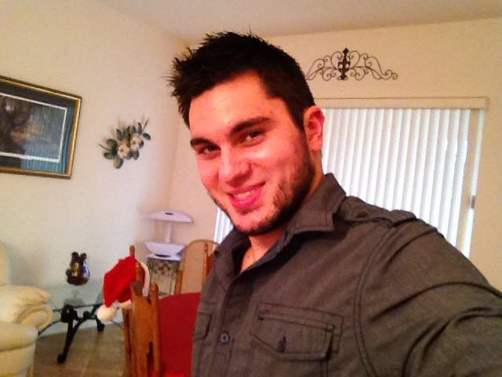

About Me
Devin Jon Wiebelt was born on September 21st 1988 in Grand Forks, North Dakota. He is the only child of his loving parents, Don and Lena. His early childhood days were often spent running around the house pretending to be a Teenage Mutant Ninja Turtle, playing Nintendo games, and watching Star Wars. At the age of nine, Devin and his family moved to Central Florida. His teenage years were spent in the theater, with aspirations to become an actor. Performing in shows such as West Side Story, My Fair Lady, Oklahoma!, and Damn Yankees, Devin found much success in his early acting career, being recognized for his achievements on stage by his mentors and peers. But when college came around, Devin made a difficult choice, the choice being to leave the world of acting behind. Instead, Devin chose to try a more practical route rather than facing the challenge of finding success on the stage or on the cameras of Hollywood. Devin began classes at the University of Central Florida in 2007. The choice to abandon something he loved was a choice Devin came to soon regret since every major he chose left him more and more unsatisfied, jumping between major after major such as Business, Criminal Justice, and many more. Finally, Devin settled on English after taking a literature class he absolutely loved. Earning his degree in English-Creative Writing Devin was now left to face the real world. Over the next several years Devin took any job he could get. It was during this time that Devin truly discovered who he was... and what he was capable of.
As an adult Devin still spends his free time enjoying the same kind of things he enjoyed as a child. He is an avid fan of comics, video games (he is a true and loyal PlayStation fan), enjoys cosplaying and attending comic book conventions, his favorite costumes he has pulled off have been a Stormtrooper from the Star Wars films, a Star Fleet Officer from Star Trek: The Original Series, Wolverine from the X-Men, and Harry Potter. Devin currently works at Walt Disney World where he works full time as a Lifeguard, saving lives and creating magic. Devin now works towards a new goal and new ambition, to combine his love of writing, creativity, and technology to enter the world of coding.
Connect with Me